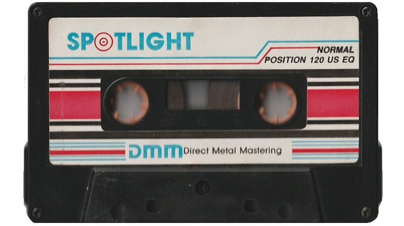
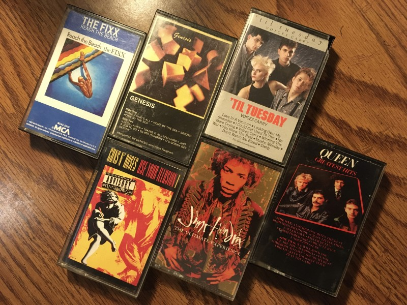
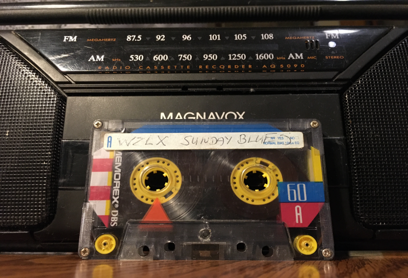
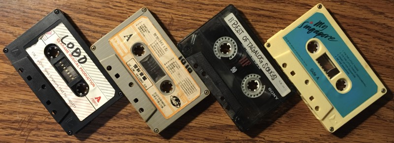
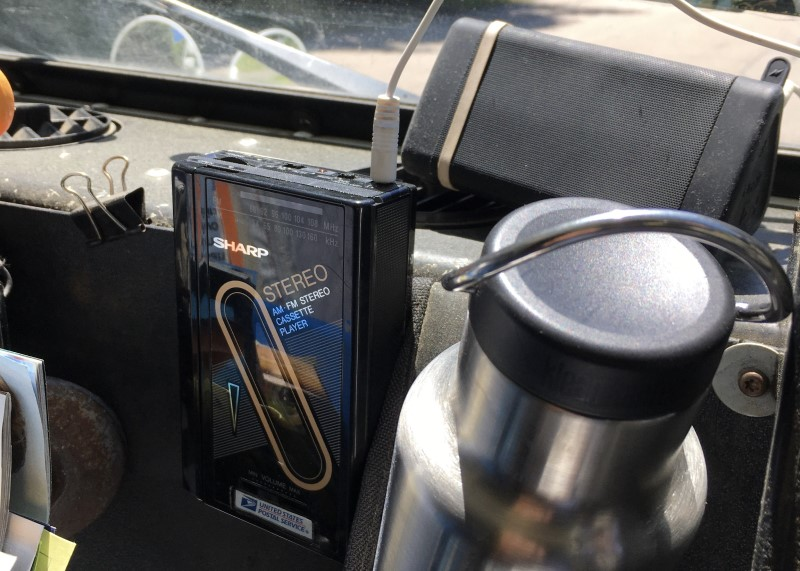
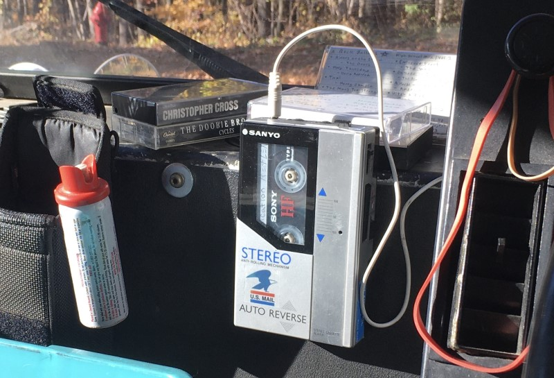
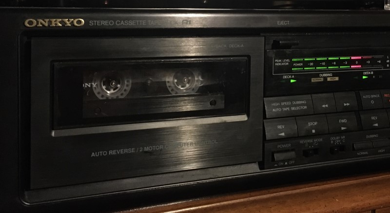
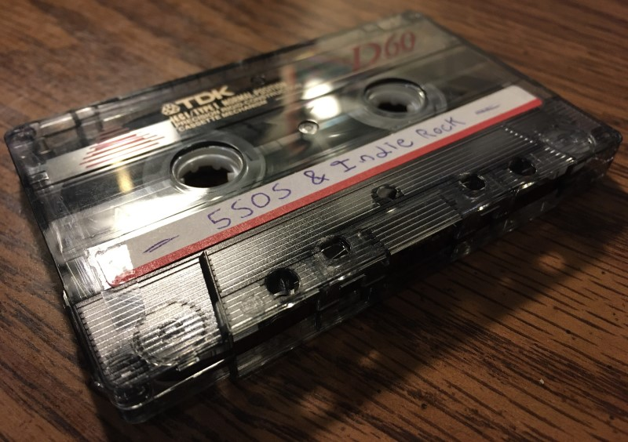
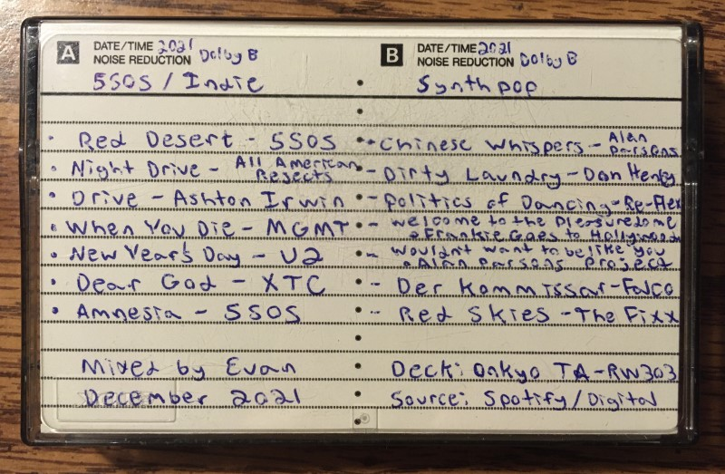
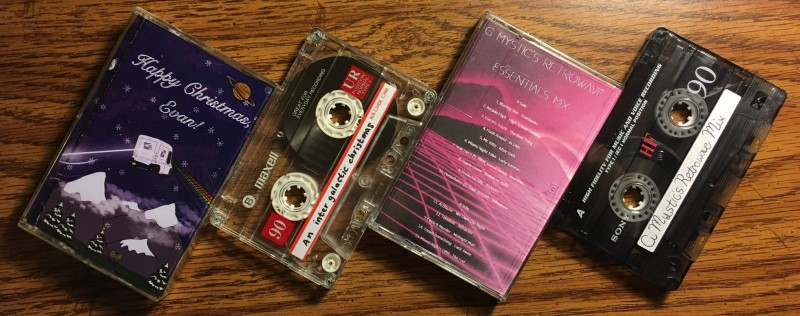

21st Century Lo-Fi
Rediscovering Cassette Culture in the 2020’s
By: Evan Lee
Dec. 3, 2023 |
Mixtapes, Retro Audio
The last real Sony Walkman was made in 2004, so was my first mixtape.
Recorded for me by my Mom when I was around six, it was left forgotten for nearly 20 years until I finally recorded one myself.
It’s the early 2000’s and I’m rewinding my VHS copy of Shrek for the god knows how many-ith time. The intro at the swamp where “All Star” by Smash Mouth plays after Shrek barges out of his outhouse is currently my absolute favorite thing to watch.
Meanwhile, my Mom is probably annoyed by how much I hog the TV to do this, repeatedly rewinding the movie all day long just to hear that song. So, one day she decides to hook up the VCR to her old karaoke tape deck and record the whole scene onto a blank cassette for me to play whenever I like - my very first mixtape.

*Representation of what it may have looked like
I’d like to say that this is where my fascination with tapes began, and that I’ve been “killing record industry profits” with home recordings ever since. But I have to admit, I have no idea where that first tape went or even what else was recorded on it for that matter.
Cassettes weren’t a big part of my childhood afterward, it was already a dated format in the early 2000’s and the family quickly moved on to CD once we had a car that played them.
I still remember the first disc we got for it, Jim Croce’s Greatest Hits. My Mom bought it at a music and video store that used to be where Famous Footwear now stands in the Natick Mall. But I never got into CD’s myself.
Besides in the car, they’re not a very portable format - carrying a Sony Discman is like lugging a Civil War canteen across your shoulder. Not a great choice for me since my favorite way to listen is on-the-go.
And we had internet by then too, so nearly any song I ever wanted was just a few clicks away.
YouTube became my main source of music instead, I’d play my top songs there and follow the algorithm to even more artists in the genres I liked.
Then, once I got an iPod and later an iPhone, pocketable MP3’s and streaming became my favorite way to listen, especially on the walk home from high school and later the bike ride to and from college.
My first smartphone, a yellow iPhone 5c, and the bike commute to FSU
Physical media was finally reintroduced to me during college though with the vinyl revival, a craze that’s grown even bigger since then.
I joined in after inheriting some records, but obviously those aren’t very portable at all and my phone still reigned supreme after gradutation. Vinyl did peak my interest in vintage audio though.
Along with my desire to listen on-the-go, it set the stage for cassettes to finally make a comeback in my life nearly two decades after that first All Star mixtape. In the summer of ‘21, while working for the Post Office.
The supervisor at the time was clearing out junk from our office’s basement and hauled up the old break room boombox to toss out, along with a crate full of CD’s and tapes.
Nobody seemed to care about them. Throughout the near full year since I started working there, I had never once heard that boombox play. So, when it was all put up for grabs before trash pickup, I was the only one interested enough to look through the music.
None of the CD’s caught my eye - lots of 90’s New Age - but after sifting through the tapes I did find one of my favorite albums, Reach The Beach by The Fixx. Somebody had good taste back in the day and there was no way I was letting that one end up in landfill.
Then I scored some more 80’s hits - Genesis, ‘Til Tuesday, and Queen - along with Guns & Roses and Jimi Hendrix too. I could only imagine jamming out to these while sorting the morning mail.
Some of the albums I saved from the Post Office
But the one that stood out the most to me actually wasn’t an album at all. It was an old home recording titled “WZLX SUNDAY BLUES” on a 60 minute Memorex blank.
I was drawn to it by the yellow hubs of the tape’s reels and it was the first one I played when I got home.
The Memorex looks down upon you
Digging out my Dad’s old boombox, I popped it in and found myself rewound back to the summer of 2001.
The “all new” 2002 Ford Explorer was ready to finance and Gilbert Gottfried was promoting Poland Springs’ new 32 ounce wide mouth bottle. I had tuned into a radio recording of WZLX from 20 years ago.
“It’s the Sunday Morning Blues, Boston Blues Special.
Local artists like Duke and the Drivers, Monster Mike Welch, and Mighty Sam McLane played between ads for Bugaboo Creek and flip phone offers from Verizon. Though, the tape ran out before J. Geils’ Band could play.
Watching the reels spin from one end to the other was, and still is, mesmerizing to me. I feel more involved with analog formats, watching the deck physically pull the tape forward to read and amplify the audio recorded onto it is an experience.
And it made me remember the first mixtape I had, the one my Mom recorded for me during the same era this radio special aired to be archived on cassette.
While my mix was lost to time, I knew my Mom still had some of her old mixtapes laying around. I was curious now and dug them up to play too, taking the boombox into the living room so we could both listen.
She had mixes for Lobo, ABBA, and “Best of Tagalog Songs” among others. They were made before she came to the United States, recorded off CD’s she borrowed while working in Singapore during the 90’s. Some were on regular blanks, but most she re-recorded over random albums.
Some of my Mom’s mixes brought over from the Philippines
The blue one to the right actually played her own voice, singing a karaoke cover of “That Wonderful Sound” by Tom Jones. She had the biggest smile when we put that one on, reflecting how she sent it to my Dad before they got married.
Her nostalgia also made me realize that listening is only half the fun. The rest comes from making the mix yourself and getting to re-live what you felt was important enough to record during a certain time in your life.
It was inspiring and now I wanted to make a mix of my own - a true first mixtape recorded by myself.
But not with the old boombox, that can only record radio and I had other ideas in mind for my mixes. I’d need to find a proper deck first, something that audio can be fed into to record like my Mom’s long gone karaoke machine used to.
In the meantime, I bought a cheap Walkman style player off eBay to listen to the rest of the cassettes my favorite way - on-the-go.
I didn’t really know what to look for other than I wanted something portable and it needed to work. So, I settled on a $15 Sharp JC-130 because it looked cool and was made in the Philippines - represent.
About as old as the postal truck itself
That cheap little thing managed to finally succeed my phone as my new favorite music player.
Along with clipping right onto my belt for walks around town, I found it mounted perfectly into the dashboard of my postal truck and could be hooked up to a portable speaker with an AUX cord.
It sounded better than I expected too, and the tactile functionality made it even superior to my phone for listening at work.
Shutting it off is as simple and instantaneous as one push of a button, compared to fumbling around a touchscreen to pause the music or waiting for the volume to decrease to zero. Makes for less awkward encounters when somebody surprises me as I pull up to the mailbox.
The Sharp was my daily player for a whole year until I found and fixed up the more iconic one I use now - a Sanyo M-G55.
Even older than the truck, 1984 vs 1987
This one deserves a blog post of its own someday, but lets get back to 2021 for now and my search for a cassette deck to record mixtapes on.
Eventually I did find one at the Savers in Framingham, a fully working Onkyo TA-RW303 dual deck for only $9.99. It fit right into the stereo system I built earlier when I got into vinyl and I was able to hook my laptop up to it with an RCA to 3.5mm headphone jack adapter.
Along with a pack of new-old-stock TDK D60 blanks I scored off eBay, I was now ready to record my own first mixtape.
This costed like $200 new in the early 90’s
It was December by the time I had everything together, so I decided to make the mix for my friend Leighah as a Christmas present. She’s really into music too with a record collection of her own.
One of her favorite songs at the time was “Red Desert” from 5SOS’s latest album, Calm. So I based Side A of the tape off that, making it track one to a 30 minute indie rock mix.
It’s followed up by the unplugged version of “Night Drive” by All American Rejects before returning to the 5SOS theme with “Drive” from drummer Ashton Irwin’s solo album, Superbloom.
I spent a lot of time piecing together songs that transitioned seamlessly into each other. My favorite is from “Drive” to “When You Die” by MGMT. The end of Irwin’s track aligns so perfectly with the start of MGMT’s, with nearly the same beats per minute melding right into each other through a crossfade effect.
“New Years Day” by U2 follows up next with “Dear God” by XTC playing after. And then it ends on one last 5SOS song, “Amnesia” from their very first self-titled album.
It doesn’t quite fit with the rest of the tracks, but it was the first 5SOS song Leighah recommended to me, so it had to have a place somewhere in the mix. The song has a mellow acoustic rhythm she thought I’d like.
Side A of the first mixtape I recorded myself
Flipping over to Side B is an 80’s Synthpop and New Wave mix based more so on my taste, but still leading with one of Leighah’s favorites - “Dirty Laundry” by Don Henley.
It plays right after a short transitional track from The Alan Parsons Project called “Chinese Whispers,” which I put in to help move the more mellow end of Side A toward the higher beat rhythm of Side B.
After Don Henley comes one of my top artists found at the time - Re-Flex, with their hit “The Politics of Dancing.” Following that is the Frankie Goes to Hollywood classic, “Welcome to the Pleasuredome.”
And, of course, I couldn’t just leave The Alan Parsons Project with one little track at the beginning, so “I Wouldn't Want To Be Like You” from their second album, I Robot, plays next. The book the album is based on is great too by the way.
It gets a bit odd with the next track, “Der Kommissar” by Falco - which is sung in Austrian. I was debating going with the English cover by After the Fire, but eh, I like the original more even if I can’t understand the lyrics.
Finally, the very last song on the tape is “Red Skies” by The Fixx, fittingly since they were the first band I pulled out of that old crate of music from the Post Office that got me back into cassettes.
The track listings. Yeah yeah, chicken scratch handwriting.
I cued up the mixes for both sides on Spotify, then recorded them directly from my laptop into the cassette deck. Because I’m stubborn and don’t want to pay for Spotify premium, it was a bit of a challenge as ads kept interrupting the flow. But that was nothing a little rewinding couldn’t fix.
Soon enough, my mixtape was complete. I wrote up all the tracks on two J-Cards then used the duel deck’s dubbing feature to make a copy for both Leighah and myself.
It was my true first mixtape, made nearly two decades after the original one I was given as a six year old. And I still like listening to it, this blog was written while its reels spun next to me.
I’ve gone on to make many more mixes now, even joining tape exchanges to trade them with others who also found cassette culture in the 2020’s.
Leighah gifted me back a mix of her own the Christmas after, one upping mine with custom art on the J-Card. And another of my friends, Tom, is looking forward to making his first one too once he finds a deck.
Leighah’s mixtape along with another from a tape exchange.
To record a mixtape is to record your own personal expression through music. Your taste and creativity in cueing up the tracks is archived on something real that you can hold, pass on, and look back to years later.
No, we’re not as big as vinyl... yet. But I think cassette culture is so much more fun and bound for a proper comeback soon.
...
What a nice, wholesome ending right?
Well… actually the player I sent Leighah along with the mixtape broke during transit. So, she couldn't even listen to it on Christmas :/
Oh well, there’s a blog topic for another day...
- The Greater Boston Graphite